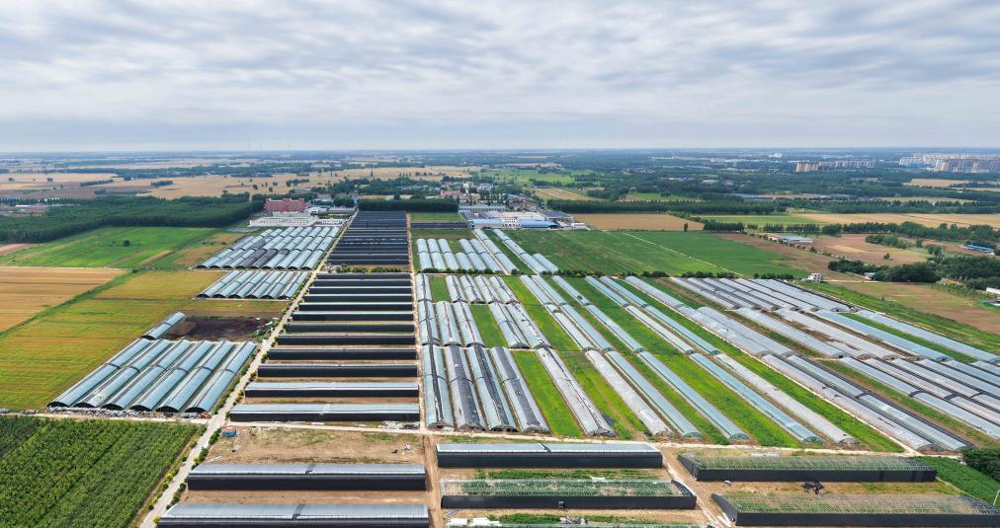
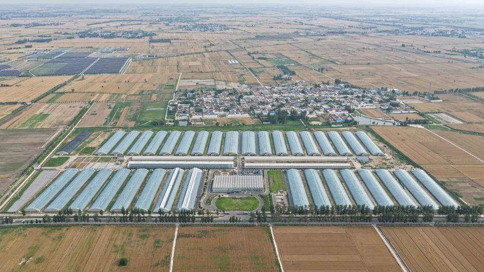
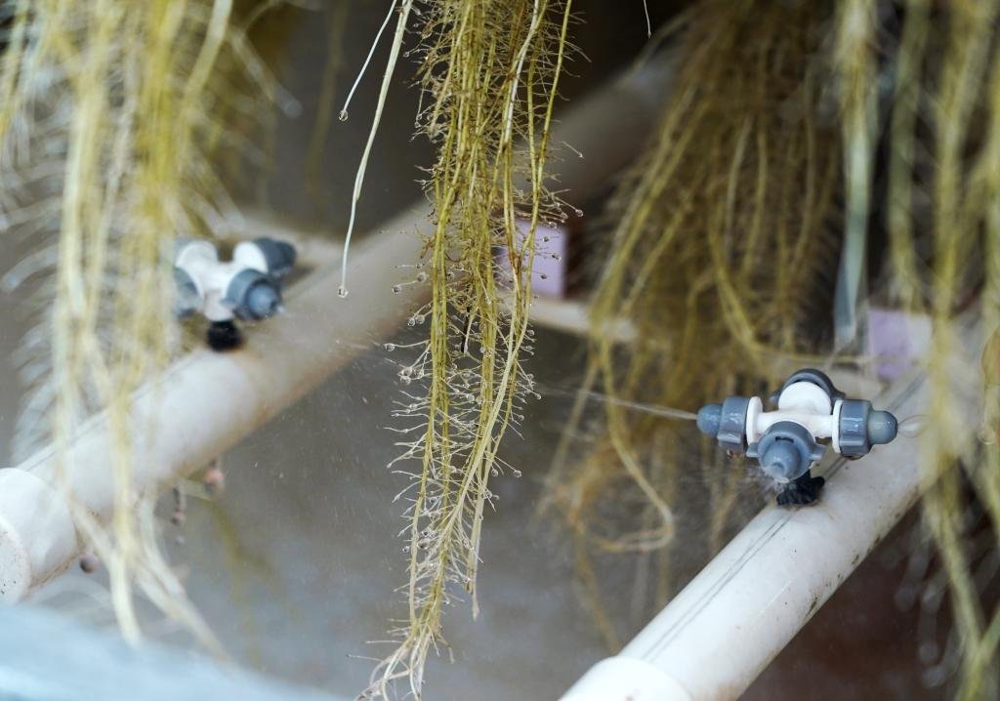
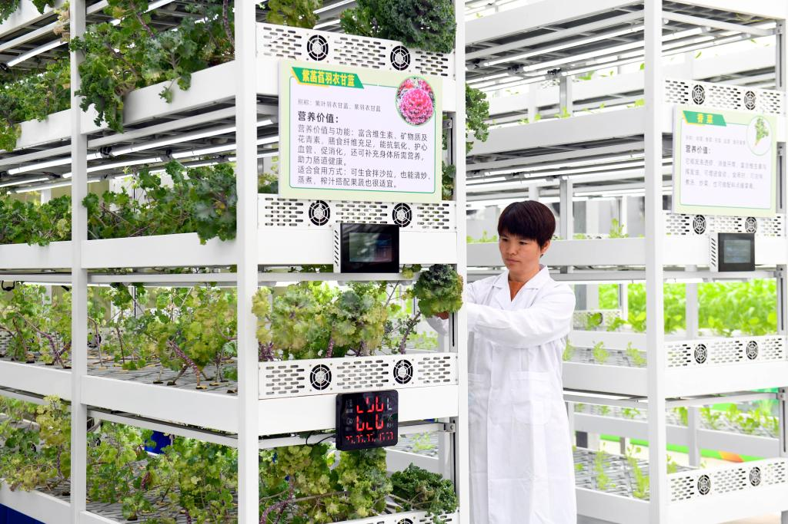
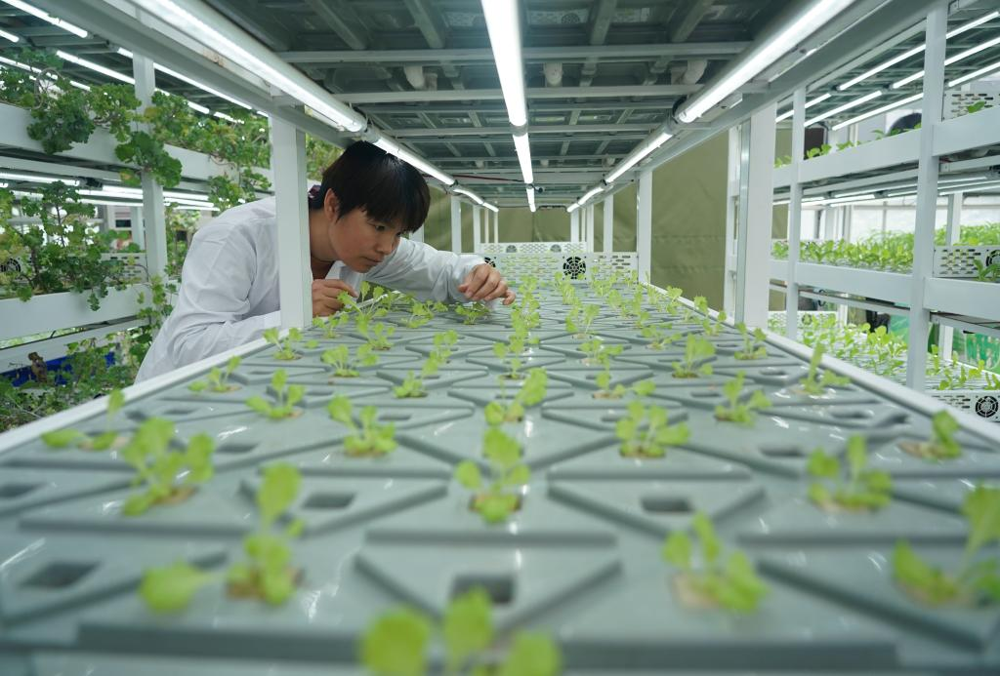
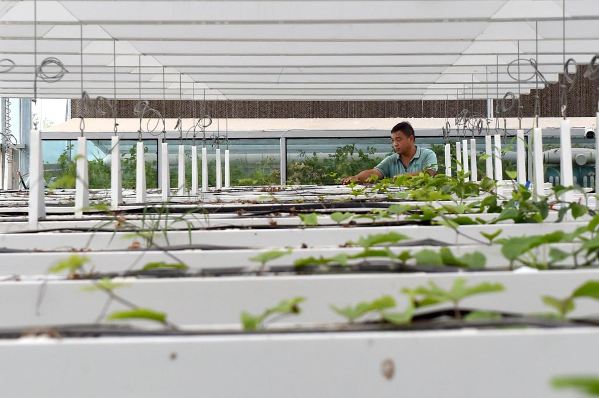
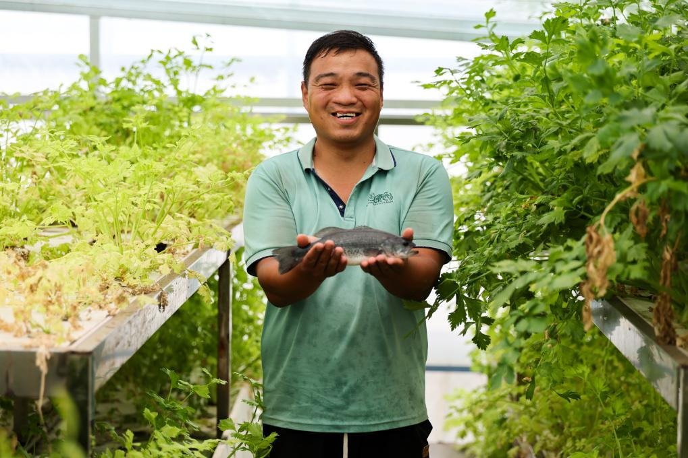
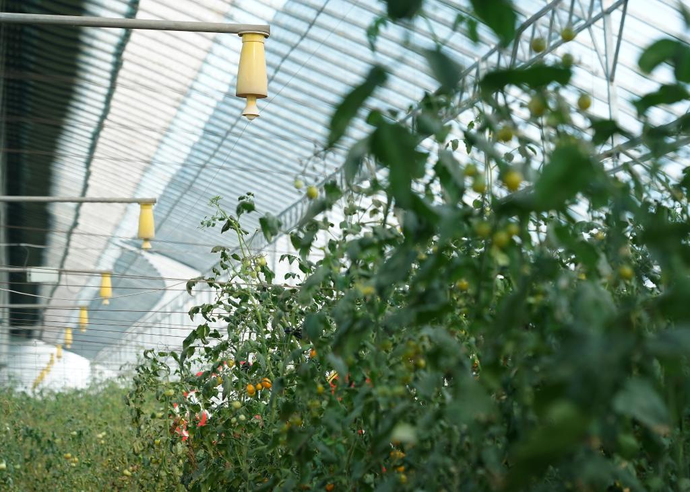
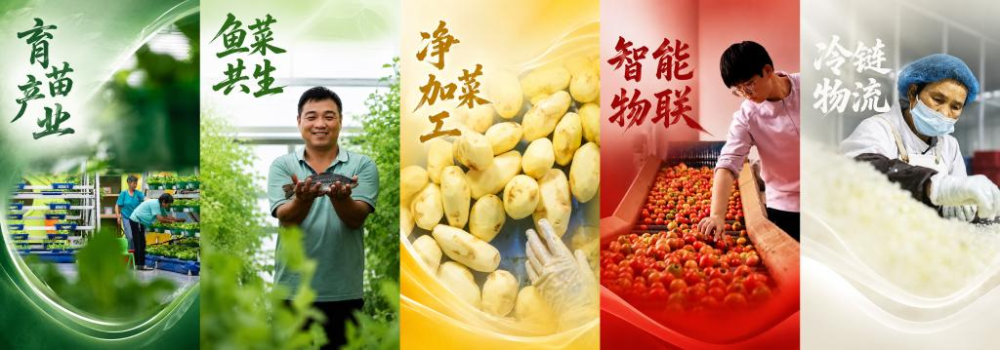

河北衡水：让“科技芯”丰盈“菜篮子”
“菜篮子”“果盘子”“粮袋子”
作为京津冀粮食蔬果的重要供给地
2025年
河北省衡水市蔬菜的产量
达390万吨
在北京市场占有率为12%
同时，粮食播种面积1088.65万亩
人均粮食产量全省第一
……
这些数据的背后
是河北省衡水市将现代农业
作为主导产业倾力打造
持续筑牢粮食及重要农产品
稳产保供根基
集成推广水肥一体化
环境智能调控等科技手段
赋能产业提质增效
加速推进果蔬产业集群化发展

这是6月5日拍摄的衡水市武邑县武罗现代农业种植专业合作社（无人机照片）。新华社记者 邓华 摄

这是6月5日拍摄的衡水市冀州现代农业融合创新基地（无人机照片）。新华社记者 邓华 摄
自动化雾培系统
走进衡水桃城区的
现代立体AI农业产业园
自动化雾培系统正在运行
把营养液打碎成微米级的雾滴
直接喷洒在植物根系
每一处根系都在自由呼吸、汲取养分
有效提高了生长效率

6月5日，在衡水市桃城区现代立体AI农业产业园，工作人员在展示自动化雾培系统。新华社记者 万象 摄

这是6月5日在衡水市桃城区现代立体AI农业产业园拍摄的自动化雾培系统。新华社记者 万象 摄
环境智能调控系统
当立体栽培遇上温室智控
“向上要空间”成为现实
垂直分层让空间利用最大化
智能系统则监测着温光水气等关键指标
精准锁定蔬菜生长的“舒适区”
在这里，蔬菜仿佛坐上了“摩天轮”
住进了“独栋公寓”
在最优环境的加持下
真正实现了一年四季高效生产
“一茬接一茬”的丰收接力

6月5日，工作人员在衡水市桃城区现代立体AI农业产业园立体种植区打理蔬菜。新华社记者 郭绪雷 摄

6月5日，工作人员在衡水市桃城区现代立体AI农业产业园立体种植区打理蔬菜。新华社记者 郭绪雷 摄

6月5日，在衡水市桃城区现代立体AI农业产业园，工作人员查看用立体栽培技术培育的蔬菜。新华社记者 万象 摄
AI鱼菜共生系统
“养鱼不换水，种菜不施肥”
虽是一句通俗概括
却精准点破了生态循环农业的精髓
鱼粪为蔬菜提供可吸收的养分
蔬菜根系净化水质
这种“以菜净水、以水养鱼”的模式
实现了种养结合与生态双赢
示意图展示鱼类排泄物为蔬菜提供养分、蔬菜根系净化水质的循环关系。

6月5日，在衡水市桃城区现代立体AI农业产业园鱼菜共生系统区域，工作人员在打理果蔬幼苗。新华社发（林秋锦 摄）

6月5日，在衡水市桃城区现代立体AI农业产业园，工作人员展示通过鱼菜共生技术养殖的鱼。新华社记者 伍志尊 摄
高压静电技术
在冀州现代农业融合创新基地
温室里是对人体无害的高压静电场
它不仅能起到“空气净化器”
杀菌消毒的作用
还是“隐形营养师”
通过电离实现“空中施肥”
让番茄长得又快又好
再加上巡检机器人24小时盯梢
环境异常、病虫害等无所遁形

这是6月5日在衡水市冀州现代农业融合创新基地拍摄的番茄。该基地运用高压静电场技术培育番茄，此技术可有效放电杀菌，提高蔬菜生长效率。新华社记者 万象 摄

6月6日，巡检机器人在衡水市冀州现代农业融合创新基地温室大棚里巡检。新华社发（林秋锦摄）
此外，育苗产业、净菜加工、
智能物联、冷链共生……
各个环节联动一体
形成了全产业链智慧农业体系


6月6日，在衡水市冀州现代农业融合创新基地，工作人员通过直播推介蔬菜。新华社发（林秋锦 摄）
科技赋能、全链协同、品牌塑造、产业集群化发展
如今，衡水市实现了
从传统农业向现代化产业的跨越
记者：伍志尊、万象、邓华、郭绪雷、林秋锦
视频：伍志尊、林秋锦
编辑：李梦馨、程婷婷、吕帅